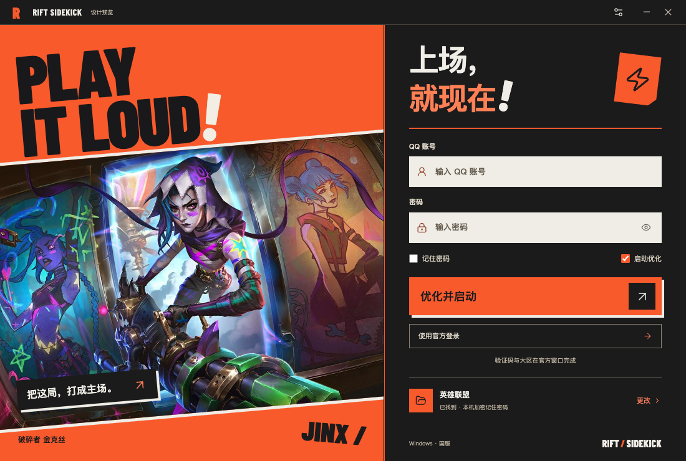
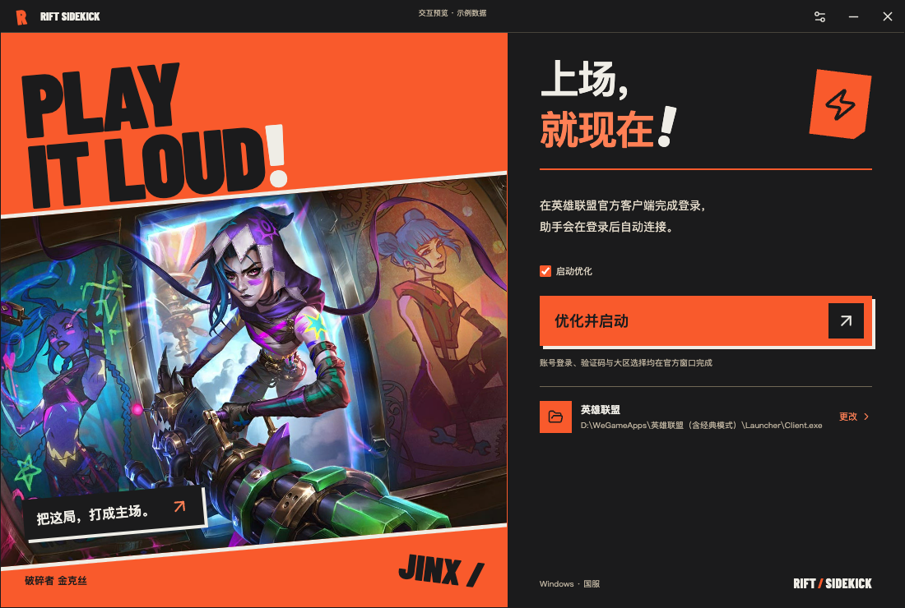
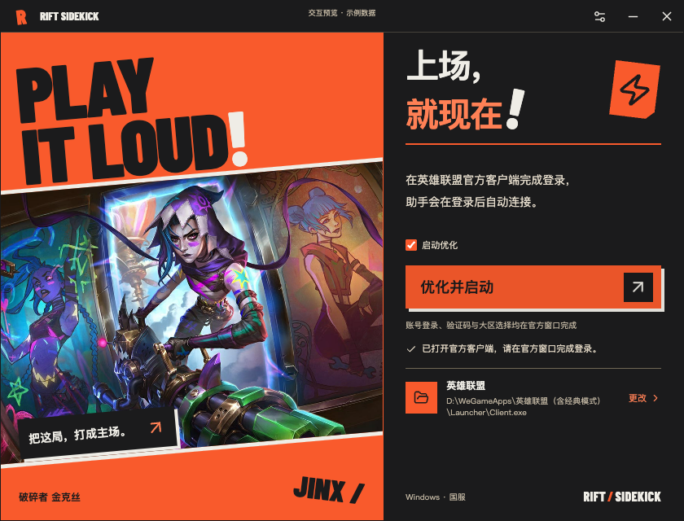
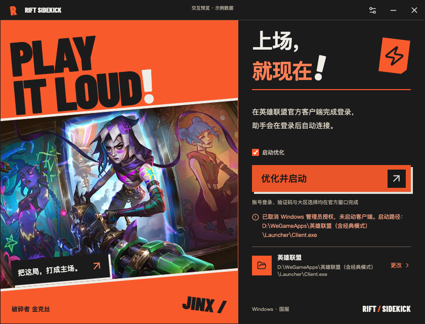
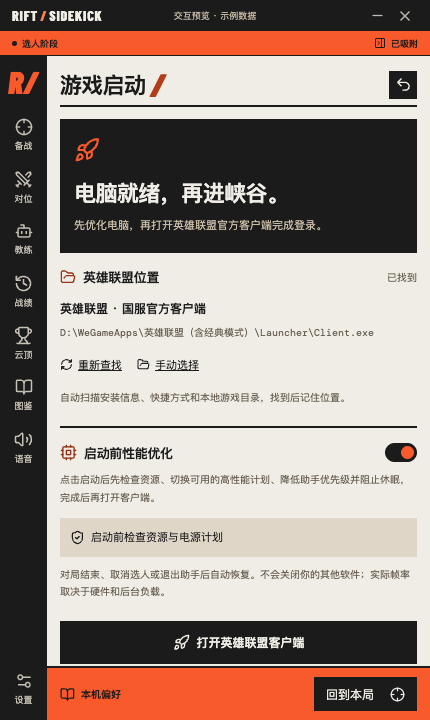
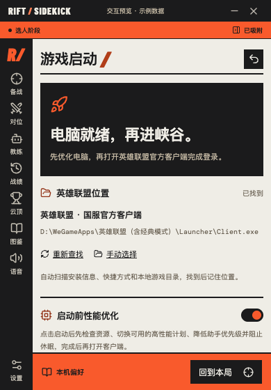

按 2026-10-27 用户要求移除 QQ 账号、密码、记住密码和自动填写入口。保留已确认稿的原画、海报构图、墨黑面板及橙色操作。流程为启动前优化 → 打开 Launcher\Client.exe → 在官方窗口登录 → LCU 连接后进入小窗。
类型检查与生产构建通过；276 项测试通过、2 项按平台跳过。以下截图来自正式 React 组件及示例桥接，所有声音静音。已核对忙碌状态、等待官方登录、具体失败原因、实际路径及设置入口；四种窗口尺寸均无横向溢出、破损图片或页面异常。Windows 原生启动、UAC 与真实登录仍待实机验证，尚未发布新安装包。




默认 430 × 720 和最小 390 × 560，保留独立滚动及固定底栏。游戏位置与启动设置不含账号表单。

